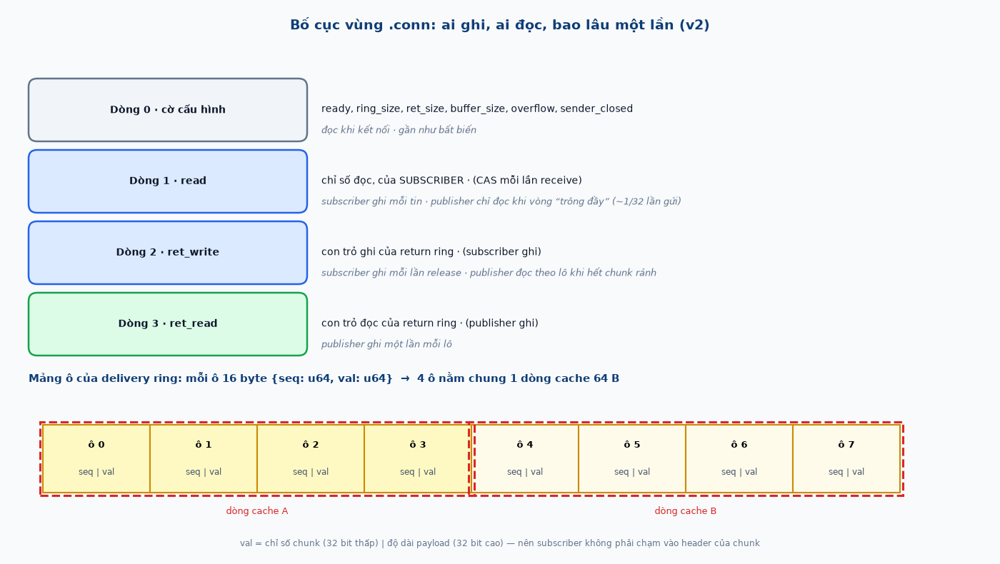

Ba chế độ đọc: dùng 3 nút tròn ở góc dưới bên phải để chuyển nhanh (trên điện thoại, ba nút nằm thành một thanh ở cuối màn hình để không đè chữ bên phải). VI — bản dịch tiếng Việt đầy đủ, theo từng đoạn. EN — nguyên văn tiếng Anh, không tách cụm. Cụm (mặc định, biểu tượng A gạch dưới) — tiếng Anh tách thành các cụm theo mệnh đề; rê chuột hoặc chạm vào một cụm để xem nghĩa tiếng Việt. Chạm lần nữa hoặc chạm ra ngoài để đóng; với cụm chứa liên kết, trên điện thoại chạm lần đầu để xem nghĩa, chạm lần hai để mở liên kết. Chế độ được ghi nhớ trên máy này; có thể mở thẳng bằng ?mode=vi, ?mode=en hoặc ?mode=chunk. Ở chế độ Cụm, ô “Gạch chân nhẹ các cụm” vẫn dùng được. Đây là bài phân tích có dịch và giải thích, không phải bản dịch nguyên văn. Ba ảnh (biểu đồ, sơ đồ dòng cache và ảnh chụp mã) là ảnh đính kèm trong bài của tác giả, đăng vì mục đích học tập phi thương mại có ghi công; bốn sơ đồ/biểu đồ còn lại do người viết vẽ.

Ảnh đính kèm trong bài đầu của @sujaldw: độ trễ một chiều trên i3-1305U, tin 8 KB, benchmark ping-pong của iceoryx2. Hình thuộc về tác giả.
TL;DR
- Tác giả viết lại phần lõi của iceoryx2 (IPC không sao chép, Rust) bằng Zig, chạy chính benchmark ping-pong của iceoryx2: v2 nhanh hơn 3,3–3,8 lần khi khác lõi (4,7 lần giữa hai luồng của một lõi, 1,7 lần khi bên gửi cũng ghi đầy 8 KB). Nhưng bản port thẳng sang Zig (v1) chỉ nhanh hơn khoảng 25%; phần lớn mức tăng đến từ v1→v2 (2,5–2,8 lần), không đổi ngôn ngữ.
- Cơ chế: mỗi tin nhắn ở v1 làm khoảng 7 dòng cache 64 byte phải chạy giữa hai lõi; v2 còn khoảng 1. Bốn mẹo: cờ “đã có” nằm trong ô của vòng (
seq == pos + 1), publisher nhớ đệm vị trí bên đọc và chỉ kiểm tra khi vòng trông đầy, chunk trả về theo lô, độ dài đi cùng trong ô. Các mẹo này lấy lại từ FastForward, Vyukov, MCRingBuffer, Rigtorp; điểm mới là áp vào pub/sub truyền tham chiếu và đếm dòng cache. - Cái giá: iceoryx2 làm nhiều việc hơn hẳn (theo dõi tiến trình chết, kiểm tra chỉ số đối tác, thu hồi mỗi lần gửi, nhiều chiến lược backpressure); zig-iceoryx chờ bận, không xử lý sự cố, tin tưởng chỉ số trong bộ nhớ chia sẻ (đọc mã cho thấy publisher dùng thẳng chỉ số do subscriber ghi, có thể làm hỏng bộ nhớ), chỉ Linux, chưa đo thông lượng. Đây là thí nghiệm, không phải middleware sản xuất.
- Người viết chạy lại trên máy ảo Xeon 8 vCPU: v1→v2 khoảng 3 lần và v2 nhanh hơn iceoryx2 khoảng 2,4–2,6 lần (cùng hướng với tác giả), nhưng port thẳng v1 lại chậm hơn Rust khoảng 25% ở đó, nên chênh lệch nhỏ ở mức ngôn ngữ phụ thuộc máy. Kích thước payload không ảnh hưởng nếu không ghi dữ liệu.
Chuỗi bài đăng nói về điều gì
What the thread is about
What the thread is about
Ngày 26/11/2026 (22:34 giờ Việt Nam), @sujaldw đăng một chuỗi chín bài (bài đầu). Diễn giải: anh viết lại phần lõi của iceoryx2, thư viện IPC (giao tiếp giữa các tiến trình) không sao chép dữ liệu viết bằng Rust cho robot, bằng Zig; kết quả “nhanh gấp 3–4 lần”; “nhưng Zig không phải lý do”. Theo anh, lý do thật là số dòng cache phải chạy qua lại giữa các lõi CPU cho mỗi tin nhắn: khoảng 7 ở bản đầu, khoảng 1 ở bản thứ hai. Mã và benchmark nằm ở 5usu/zig-iceoryx.
On 26 Nov 2026 (22:34, Vietnam time) @sujaldw posted a nine-post thread (first post). Paraphrased: he rebuilt the core of iceoryx2, a Rust zero-copy IPC (inter-process communication) library for robotics, in Zig; the result was “3–4x faster”; “but Zig is not the reason”. The real reason, he says, is the number of cache lines that cross between CPU cores for every message: about 7 in his first version, about 1 in the second. The code and benchmark are in 5usu/zig-iceoryx.
On 26 Nov 2026 (22:34, Vietnam time) @sujaldw posted a nine-post thread (first post). Paraphrased: he rebuilt the core of iceoryx2, a Rust zero-copy IPC (inter-process communication) library for robotics, in Zig; the result was “3–4x faster”; “but Zig is not the reason”. The real reason, he says, is the number of cache lines that cross between CPU cores for every message: about 7 in his first version, about 1 in the second. The code and benchmark are in 5usu/zig-iceoryx.
Bài viết này đi sâu hơn chuỗi bài đăng. Người viết đọc mã Zig từng dòng, đối chiếu với mã nguồn iceoryx2 (nhánh main, 26/11/2026), lần từng mẹo về các công trình trước đó, kiểm tra con số tiêu đề, và chạy lại benchmark trên một máy khác. Câu kết của chuỗi bài, “chọn bố cục dữ liệu trước khi chọn ngôn ngữ”, được số liệu ủng hộ khá vững; còn con số “3–4 lần” là có thật nhưng đi kèm nhiều lưu ý được liệt kê trong phần phân tích.
This article goes deeper than the thread. It reads the Zig source line by line, compares it with the iceoryx2 source (main branch, 26 Nov 2026), traces each trick back to published prior art, checks the headline against the numbers, and re-runs the benchmarks on another machine. The closing line of the thread, “pick your data layout before you pick your language”, turns out to be well supported; the “3–4x” headline is real but needs several caveats, listed in the analysis.
This article goes deeper than the thread. It reads the Zig source line by line, compares it with the iceoryx2 source (main branch, 26 Nov 2026), traces each trick back to published prior art, checks the headline against the numbers, and re-runs the benchmarks on another machine. The closing line of the thread, “pick your data layout before you pick your language”, turns out to be well supported; the “3–4x” headline is real but needs several caveats, listed in the analysis.
Bối cảnh: IPC “không sao chép” thực sự chuyển cái gì
Background: what “zero-copy IPC” really moves
Background: what “zero-copy IPC” really moves
Hàng đợi tin nhắn cục bộ thông thường (pipe, socket, message broker) sao chép dữ liệu ít nhất hai lần và đi vào nhân hệ điều hành bằng một lời gọi hệ thống mỗi lần. Thiết kế bộ nhớ chia sẻ tránh được cả hai: bên gửi ghi tin nhắn một lần vào vùng nhớ mà hai tiến trình cùng ánh xạ, và thứ đi qua giữa hai tiến trình chỉ là một tham chiếu nhỏ (chỉ số trỏ vào một bể các “chunk” cỡ cố định). Bên nhận sau đó đọc dữ liệu ngay tại chỗ. Kích thước tin nhắn không còn ảnh hưởng đến việc vận chuyển; chi phí còn lại là đồng bộ hóa: báo cho lõi bên kia “chunk 7 đã sẵn sàng” rồi sau đó “tôi dùng xong chunk 7”.
A normal local message queue (pipe, socket, message broker) copies the bytes at least twice and enters the kernel with a system call each time. A shared-memory design avoids both: the publisher writes the message once into a memory region that both processes have mapped, and what travels between processes is only a small reference (an index into a pool of fixed-size chunks). The subscriber then reads the payload in place. Message size stops mattering for the transport itself; the cost that remains is the synchronisation: telling the other core “chunk 7 is ready” and, later, “I am done with chunk 7”.
A normal local message queue (pipe, socket, message broker) copies the bytes at least twice and enters the kernel with a system call each time. A shared-memory design avoids both: the publisher writes the message once into a memory region that both processes have mapped, and what travels between processes is only a small reference (an index into a pool of fixed-size chunks). The subscriber then reads the payload in place. Message size stops mattering for the transport itself; the cost that remains is the synchronisation: telling the other core “chunk 7 is ready” and, later, “I am done with chunk 7”.
iceoryx2 là bản viết lại bằng Rust của iceoryx (C++ cũ) do Eclipse Foundation phát triển. README của dự án cam kết “độ trễ truyền thấp ổn định bất kể kích thước dữ liệu”, hỗ trợ các mẫu publish-subscribe, request-response, event và blackboard, đồng thời liệt kê binding Zig ở trạng thái “đang lên kế hoạch”. Thư viện này được xây dựng cho môi trường đòi hỏi an toàn cao, điều rất quan trọng ở phần sau: nó theo dõi tiến trình bị chết, kiểm tra dữ liệu đối tác trả về, và dọn dẹp sau sự cố. Tác giả nói rõ đó là những tính năng thực thụ và tốn chu kỳ CPU, còn bản port của anh lược bỏ chúng.
iceoryx2 is the Eclipse Foundation’s Rust rewrite of the older C++ iceoryx. Its README promises “consistently low transmission latency regardless of payload size”, supports publish-subscribe, request-response, events and blackboard patterns, and lists a Zig binding as “planned”. It is built for safety-critical settings, which matters later: it tracks dead processes, validates what peers hand back, and cleans up after crashes. The author is explicit that these are real features that cost cycles, and that his port drops them.
iceoryx2 is the Eclipse Foundation’s Rust rewrite of the older C++ iceoryx. Its README promises “consistently low transmission latency regardless of payload size”, supports publish-subscribe, request-response, events and blackboard patterns, and lists a Zig binding as “planned”. It is built for safety-critical settings, which matters later: it tracks dead processes, validates what peers hand back, and cleans up after crashes. The author is explicit that these are real features that cost cycles, and that his port drops them.
Để so sánh công bằng, anh sao chép kiến trúc của iceoryx2 (một service segment dùng chung, một bể chunk cho mỗi publisher, một hàng đợi cho mỗi cặp publisher→subscriber) và port “từng dòng” chính benchmark độ trễ ping-pong của iceoryx2. Hai bên chuyền một mẫu qua lại giữa hai dịch vụ a2b và b2a, cả hai đều chờ bận (busy-wait); độ trễ báo cáo bằng tổng thời gian chia cho 2 × số vòng. Dữ liệu mặc định là 8 KB.
To keep the comparison fair he copied iceoryx2’s architecture (a shared service segment, a chunk pool per publisher, one queue per publisher→subscriber pair) and ported iceoryx2’s own ping-pong latency benchmark “line for line”. Two participants bounce a sample between services a2b and b2a, both busy-waiting; the reported latency is total time divided by 2 × iterations. The default payload is 8 KB.
To keep the comparison fair he copied iceoryx2’s architecture (a shared service segment, a chunk pool per publisher, one queue per publisher→subscriber pair) and ported iceoryx2’s own ping-pong latency benchmark “line for line”. Two participants bounce a sample between services a2b and b2a, both busy-waiting; the reported latency is total time divided by 2 × iterations. The default payload is 8 KB.
Các con số, và điều con số tiêu đề che đi
The numbers, and what the headline hides
The numbers, and what the headline hides
Cấu hình theo README: Intel Core i3-1305U (1 lõi hiệu năng P có hai luồng siêu phân luồng cộng 4 lõi tiết kiệm điện E; trang thông số Intel xác nhận 5 lõi, 6 luồng), Linux “7.2” như tác giả ghi, độ trễ một chiều, trung vị của 5 lần chạy xen kẽ, mỗi lần 1 triệu vòng, tin nhắn 8 KB. Biểu đồ ở đầu bài là của tác giả.
Setup per the README: Intel Core i3-1305U (1 performance core with two hyper-threads plus 4 efficiency cores; Intel’s spec sheet confirms 5 cores, 6 threads), Linux “7.2” as written by the author, one-way latency, median of 5 interleaved runs of 1 M round trips, 8 KB messages. The chart at the top of this article is the author’s.
Setup per the README: Intel Core i3-1305U (1 performance core with two hyper-threads plus 4 efficiency cores; Intel’s spec sheet confirms 5 cores, 6 threads), Linux “7.2” as written by the author, one-way latency, median of 5 interleaved runs of 1 M round trips, 8 KB messages. The chart at the top of this article is the author’s.
Đặt bảng của README cạnh các tỉ lệ (do người viết tính; “×” là phiên bản bên phải nhanh gấp bao nhiêu lần phiên bản bên trái):
Putting the README’s table next to the ratios (computed by the writer; “×” means how many times faster the right-hand version is than the left):
Putting the README’s table next to the ratios (computed by the writer; “×” means how many times faster the right-hand version is than the left):
| Cặp lõi / Cores | iceoryx2 (Rust) | v1 | v2 | Rust→v1 | v1→v2 | Rust→v2 |
|---|---|---|---|---|---|---|
| 0,1 — hai luồng của P-core / hyper-threads | 161 ns | 52 ns | 34 ns | 3,1× | 1,5× | 4,7× |
| 0,2 — P ↔ E | 368 ns | 276 ns | 111 ns | 1,33× | 2,5× | 3,3× |
| 2,3 — E ↔ E | 394 ns | 291 ns | 103 ns | 1,35× | 2,8× | 3,8× |
0,2 với --send-copy (ghi 8 KB mỗi lần gửi) | 354 ns | 261 ns | 208 ns | 1,36× | 1,25× | 1,7× |
- “3–4 lần” là khoảng của trường hợp khác lõi (3,3× và 3,8×). Giữa hai luồng của cùng một lõi là 4,7×, còn khi bên gửi cũng ghi đầy 8 KB dữ liệu thì chỉ còn 1,7×. Một trả lời trong chuỗi (@dr_hb_ai) trỏ đúng vào dòng đó: “354 so với 208 ns, vẫn là 1,7 lần vững chắc”.“3–4x” is the cross-core range (3.3× and 3.8×). Between hyper-threads of one core it is 4.7×, and when the sender also fills the 8 KB payload it falls to 1.7×. A reply in the thread (@dr_hb_ai) points at exactly that row: “354 vs 208 ns, still a solid 1.7x”.“3–4x” is the cross-core range (3.3× and 3.8×). Between hyper-threads of one core it is 4.7×, and when the sender also fills the 8 KB payload it falls to 1.7×. A reply in the thread (@dr_hb_ai) points at exactly that row: “354 vs 208 ns, still a solid 1.7x”.
- Tác động của ngôn ngữ nhỏ, tác động của thiết kế lớn. Rust→v1 là port thẳng và giảm khoảng 25% thời gian khi chạy khác lõi (1 − 276/368 = 25%, 1 − 291/394 = 26%). v1→v2 không đổi gì về ngôn ngữ mà cho mức nhanh hơn 2,5–2,8× khi khác lõi. Đó chính là luận điểm của chuỗi bài và bảng số liệu ủng hộ điều này.The language effect is small and the design effect is large. Rust→v1 is a straight port and gives about 25% less time across cores (1 − 276/368 = 25%, 1 − 291/394 = 26%). v1→v2 changes nothing in the language and gives 2.5–2.8× across cores. That is the thread’s thesis and the table supports it.The language effect is small and the design effect is large. Rust→v1 is a straight port and gives about 25% less time across cores (1 − 276/368 = 25%, 1 − 291/394 = 26%). v1→v2 changes nothing in the language and gives 2.5–2.8× across cores. That is the thread’s thesis and the table supports it.
- “Độ trễ” ở đây là nửa vòng đi-về, tính trung bình trên cả hai chiều và cả hai bên (
elapsed / (2 × iterations)), không phải thời gian một chiều đo trực tiếp, và chuỗi bài không báo cáo độ phân tán. Một dấu hiệu về mức nhiễu: với iceoryx2, dòng “có copy” (354 ns) lại thấp hơn dòng không copy (368 ns) dù làm nhiều việc hơn, nên mức chênh vài phần trăm không nên coi là tín hiệu có ý nghĩa.“Latency” here is half a round trip averaged over both directions and both participants (elapsed / (2 × iterations)), not a measured one-way time, and the thread reports no spread. One hint of the noise floor: for iceoryx2 the “copy” row (354 ns) is lower than the no-copy row (368 ns) although it does more work, so differences of a few percent should not be read as signal.“Latency” here is half a round trip averaged over both directions and both participants (elapsed / (2 × iterations)), not a measured one-way time, and the thread reports no spread. One hint of the noise floor: for iceoryx2 the “copy” row (354 ns) is lower than the no-copy row (368 ns) although it does more work, so differences of a few percent should not be read as signal.
Vì sao dòng cache quyết định độ trễ
Why cache lines decide the latency
Why cache lines decide the latency
Một lõi CPU không đọc từng byte từ bộ nhớ mà làm việc với các dòng cache 64 byte nằm trong cache riêng của nó. Giao thức nhất quán cache (MESI và các biến thể) đảm bảo mỗi lúc chỉ một lõi được sở hữu dòng để ghi. Khi lõi A ghi vào một dòng mà lõi B đang giữ, bản của B bị vô hiệu hóa. Khi B đọc lại dòng đó, nó phải được lấy từ cache của A qua mạng kết nối nội bộ trong chip. Mỗi lần trao tay như vậy là một lần chuyển cache-sang-cache, và nó nằm nối tiếp trên đường găng (critical path): bên đọc không thể đi tiếp cho đến khi dòng tới nơi.
A CPU core does not read single bytes from memory; it works on 64-byte cache lines held in its private caches. A coherence protocol (MESI and its variants) makes sure only one core can own a line for writing at a time. When core A writes a line that core B has cached, B’s copy is invalidated. When B then reads it, the line has to be fetched from A’s cache over the chip’s interconnect. Each such hand-over is a cache-to-cache transfer, and it is serial on the critical path: the reader cannot continue until the line arrives.
A CPU core does not read single bytes from memory; it works on 64-byte cache lines held in its private caches. A coherence protocol (MESI and its variants) makes sure only one core can own a line for writing at a time. When core A writes a line that core B has cached, B’s copy is invalidated. When B then reads it, the line has to be fetched from A’s cache over the chip’s interconnect. Each such hand-over is a cache-to-cache transfer, and it is serial on the critical path: the reader cannot continue until the line arrives.
Một lần chuyển chậm cỡ nào? Các phép đo công khai cho một dòng nảy qua lại giữa hai lõi bằng compare-and-swap ghi nhận khoảng 35 ns (P↔P), 44 ns (P↔E) và 50 ns (E↔E) trên Core i9-12900K để bàn (core-to-core-latency), và gần 100 ns bên trong cụm E-core công suất thấp của Meteor Lake (Chips and Cheese). Chip laptop 15 W như i3-1305U của tác giả không có trong các nguồn đó; ước lượng thô là vài chục nano giây mỗi lần chuyển, cùng bậc độ lớn với toàn bộ ngân sách độ trễ một chiều của v2.
How slow is one transfer? Public measurements bounce a line between two cores with compare-and-swap: roughly 35 ns (P↔P), 44 ns (P↔E) and 50 ns (E↔E) on a desktop Core i9-12900K (core-to-core-latency), and nearly 100 ns inside the low-power E-core island of Meteor Lake (Chips and Cheese). A 15 W laptop part like the author’s i3-1305U has not been measured in those sources; a back-of-envelope guess is tens of nanoseconds per transfer, which is the same order as the whole one-way budget in v2.
How slow is one transfer? Public measurements bounce a line between two cores with compare-and-swap: roughly 35 ns (P↔P), 44 ns (P↔E) and 50 ns (E↔E) on a desktop Core i9-12900K (core-to-core-latency), and nearly 100 ns inside the low-power E-core island of Meteor Lake (Chips and Cheese). A 15 W laptop part like the author’s i3-1305U has not been measured in those sources; a back-of-envelope guess is tens of nanoseconds per transfer, which is the same order as the whole one-way budget in v2.
Đó là lý do vật lý để chuỗi bài nói “không phải số lệnh, mà là dòng cache”. Một lõi hiện đại thực thi vài lệnh mỗi nano giây; một tin nhắn cần bảy lần chuyển dòng phụ thuộc nhau thì không thể xong dưới vài trăm nano giây dù mã chặt chẽ đến đâu. Ý này không mới trong giới ring buffer: Erik Rigtorp đo thấy hàng đợi một-bên-gửi cổ điển gây khoảng 3 lần miss cache cho mỗi phần tử, và việc lưu bản sao đệm chỉ số của phía bên kia giảm số miss từ 350 triệu xuống 15 triệu, tăng thông lượng từ 5,5 triệu lên 112 triệu phần tử/giây trên Ryzen 9 3900X khi hai luồng nằm ở hai chiplet khác nhau (Rigtorp, 2021).
That is the physical reason the thread says “it’s not instructions, it’s cache lines”. A modern core retires several instructions per nanosecond; a message that needs seven dependent line transfers cannot finish in under several hundred nanoseconds no matter how tight the code is. The idea is not new in ring-buffer circles: Erik Rigtorp measured that a classic single-producer queue incurs about 3 cache misses per item and that caching the other side’s index cuts misses from 350 M to 15 M and raises throughput from 5.5 M to 112 M items/s on a Ryzen 9 3900X with threads on different chiplets (Rigtorp, 2021).
That is the physical reason the thread says “it’s not instructions, it’s cache lines”. A modern core retires several instructions per nanosecond; a message that needs seven dependent line transfers cannot finish in under several hundred nanoseconds no matter how tight the code is. The idea is not new in ring-buffer circles: Erik Rigtorp measured that a classic single-producer queue incurs about 3 cache misses per item and that caching the other side’s index cuts misses from 350 M to 15 M and raises throughput from 5.5 M to 112 M items/s on a Ryzen 9 3900X with threads on different chiplets (Rigtorp, 2021).
Kiến trúc: zig-iceoryx thực sự dựng gì
Architecture: what zig-iceoryx actually builds
Architecture: what zig-iceoryx actually builds

src/zc.zig của kho zig-iceoryx.- Service segment (
/dev/shm/iox2zig_<service>.service): cấu hình tĩnh, các khe cổng publisher/subscriber và mộtchange_counter. Tạo hoặc hủy cổng thì tăng bộ đếm; mỗi lầnsendvàreceiveđều đọc nó và chỉ khi nó đổi mới kết nối lại. Vì gần như không bao giờ bị ghi, dòng cache đó giữ ở trạng thái Shared trong mọi lõi và không gây lưu lượng khi chạy ổn định.Service segment (/dev/shm/iox2zig_<service>.service): static configuration plus slots for publisher and subscriber ports, and achange_counter. Creating or dropping a port bumps the counter; everysendandreceivereads it, and only when it changed does the port reconnect. Because it is almost never written, that line stays in Shared state in every core and costs no traffic in steady state.Service segment (/dev/shm/iox2zig_<service>.service): static configuration plus slots for publisher and subscriber ports, and achange_counter. Creating or dropping a port bumps the counter; everysendandreceivereads it, and only when it changed does the port reconnect. Because it is almost never written, that line stays in Shared state in every core and costs no traffic in steady state. - Data segment (một vùng cho mỗi publisher): các chunk cỡ cố định, mỗi chunk gồm header 64 byte (id publisher, số thứ tự, độ dài payload) rồi đến payload, làm tròn lên bội số của 64 byte. Chỉ publisher sở hữu mới cấp phát, nên free list và bộ đếm tham chiếu là mảng cục bộ thông thường của tiến trình, không cần atomic. Subscriber ánh xạ vùng này chỉ-đọc.Data segment (one per publisher): fixed-size chunks, each a 64-byte header (publisher id, sequence number, payload length) followed by the payload, rounded up to a multiple of 64 bytes. Only the owning publisher allocates, so the free list and reference counts are ordinary process-local arrays with no atomics. Subscribers map the segment read-only.Data segment (one per publisher): fixed-size chunks, each a 64-byte header (publisher id, sequence number, payload length) followed by the payload, rounded up to a multiple of 64 bytes. Only the owning publisher allocates, so the free list and reference counts are ordinary process-local arrays with no atomics. Subscribers map the segment read-only.
- Connection (một kết nối cho mỗi cặp publisher/subscriber): một delivery ring gồm các ô gắn số thứ tự đi tới subscriber, và một return ring chứa chỉ số chunk đi ngược lại. Khi bật “safe overflow” (mặc định của iceoryx2), subscriber chậm sẽ mất các mẫu cũ nhất và publisher không bao giờ bị chặn.Connection (one per publisher/subscriber pair): a delivery ring of sequence-tagged cells going to the subscriber, and a return ring of chunk indices coming back. With “safe overflow” on (the iceoryx2 default), a slow subscriber loses the oldest samples and the publisher never blocks.Connection (one per publisher/subscriber pair): a delivery ring of sequence-tagged cells going to the subscriber, and a return ring of chunk indices coming back. With “safe overflow” on (the iceoryx2 default), a slow subscriber loses the oldest samples and the publisher never blocks.
Vòng đời một tin nhắn: publisher loan một chunk rảnh (một thao tác pop cục bộ), ghi dữ liệu rồi send: ghi header chunk (một dòng cục bộ, v2 không để subscriber đọc dòng này), rồi ghi một ô của vòng. Subscriber poll ô đó, lấy được {chỉ số chunk, độ dài}, rồi đọc hoặc bỏ qua dữ liệu. Khi release, nó đẩy chỉ số chunk vào return ring. Publisher chỉ nhìn return ring khi free list hết. Không có bước nào trên đường dẫn này đi vào nhân hệ điều hành.
The life of one message: the publisher loans a free chunk (a local pop), writes the payload, and sends: it writes the chunk header (a local line, never read by the subscriber in v2), then stores one ring cell. The subscriber polls that cell, gets {chunk index, length}, and reads or ignores the payload. On release it pushes the chunk index to the return ring. The publisher only looks at the return ring when its free list is empty. Nothing in this path enters the kernel.
The life of one message: the publisher loans a free chunk (a local pop), writes the payload, and sends: it writes the chunk header (a local line, never read by the subscriber in v2), then stores one ring cell. The subscriber polls that cell, gets {chunk index, length}, and reads or ignores the payload. On release it pushes the chunk index to the return ring. The publisher only looks at the return ring when its free list is empty. Nothing in this path enters the kernel.
Từ v1 đến v2: bảy dòng và một dòng
From v1 to v2: the seven lines and the one line
From v1 to v2: the seven lines and the one line
v1 phản chiếu cách vận chuyển của iceoryx2: một hàng đợi submission chứa chỉ số chunk (publisher→subscriber) và một hàng đợi completion (subscriber→publisher), mỗi hàng là một hàng đợi chỉ số có chỉ số ghi và chỉ số đọc dùng chung. Đọc src/zc_v1.zig, một tin nhắn chạm các dòng cache dùng chung sau, khớp với sơ đồ của tác giả bên dưới (con số “~7” của anh):
v1 mirrors iceoryx2’s transport: a submission queue of chunk indices (publisher→subscriber) and a completion queue (subscriber→publisher), each an index queue with a shared write index and a shared read index. Reading src/zc_v1.zig, a message touches these shared lines, matching the author’s diagram below (his “~7”):
v1 mirrors iceoryx2’s transport: a submission queue of chunk indices (publisher→subscriber) and a completion queue (subscriber→publisher), each an index queue with a shared write index and a shared read index. Reading src/zc_v1.zig, a message touches these shared lines, matching the author’s diagram below (his “~7”):

| Dòng cache / line | v1: mỗi tin | v2: mỗi tin |
|---|---|---|
chỉ số ghi của hàng đợi chính (sub_write) | publisher ghi, subscriber đọc | không còn: báo “đã có” nằm trong ô |
ô của hàng đợi (slot) | publisher ghi, subscriber đọc | ô {seq, chunk | len}: 1 dòng mang cả cờ lẫn tham chiếu |
chỉ số đọc (sub_read) | publisher đọc mỗi lần gửi; subscriber CAS | publisher đọc lại chỉ khi vòng trông đầy (khoảng 1 lần / 32 lần gửi) |
| header của chunk | subscriber đọc để biết độ dài | độ dài đi trong ô, không đọc header |
ô trả về (comp slot) | subscriber ghi, publisher đọc ngay | publisher gom theo lô, chỉ khi hết chunk rảnh |
comp_write, comp_read | hai dòng, đọc/ghi mỗi lần loan và send | cùng cơ chế theo lô, ~1/32 mỗi tin |
Năm thay đổi, kèm lời trích dẫn của tác giả trong ngoặc kép, và phần chi phí mà mỗi thay đổi cắt bỏ:
The five changes, with the author’s own wording in quotation marks, and what each removes:
The five changes, with the author’s own wording in quotation marks, and what each removes:
- “Cờ ‘ready’ nằm ngay trong ô của vòng, không phải bộ đếm riêng.” Mỗi ô là {
seq,val}; ô tại vị trí p sẵn sàng khiseq == p + 1. Subscriber poll chính ô đó nên không bao giờ phải đọc chỉ số ghi dùng chung. Đây là cùng một mẹo với hàng đợi có giới hạn của Vyukov và FastForward (xem phần sau).“The ‘ready’ flag lives inside the ring slot, not a separate counter.” Each cell is {seq,val}; the cell for ring position p is ready whenseq == p + 1. The subscriber polls the cell itself, so it never reads a shared write index. This is the same trick as Vyukov’s bounded queue and FastForward (see the next section).“The ‘ready’ flag lives inside the ring slot, not a separate counter.” Each cell is {seq,val}; the cell for ring position p is ready whenseq == p + 1. The subscriber polls the cell itself, so it never reads a shared write index. This is the same trick as Vyukov’s bounded queue and FastForward (see the next section). - “Publisher nhớ đệm vị trí của bên đọc, chỉ kiểm tra khi vòng trông đầy.” Publisher giữ vị trí ghi riêng và một bản sao đệm của chỉ số đọc; nó chỉ đọc lại chỉ số đọc dùng chung khi
w − cached_read ≥ ring_size(mặc định 32).“The publisher caches where the reader is, checks only when the ring looks full.” The publisher keeps its own write position and a cached copy of the read index; it re-reads the shared read index only whenw − cached_read ≥ ring_size(32 by default).“The publisher caches where the reader is, checks only when the ring looks full.” The publisher keeps its own write position and a cached copy of the read index; it re-reads the shared read index only whenw − cached_read ≥ ring_size(32 by default). - “Buffer trả về theo lô.” v1 kiểm tra chunk trả về ở mỗi lần loan và send; v2 chỉ gọi
reclaim()khi free list trống rồi rút cạn toàn bộ return ring trong một lượt.“Buffers come back in batches.” v1 polled returned chunks on every loan and send; v2 callsreclaim()only when the free list is empty and then drains every return ring in one pass.“Buffers come back in batches.” v1 polled returned chunks on every loan and send; v2 callsreclaim()only when the free list is empty and then drains every return ring in one pass. - “Độ dài payload đi cùng trong ô.”
valgói chỉ số chunk (32 bit thấp) và độ dài payload (32 bit cao), nên bên nhận không phải chạm vào dòng header của chunk.“Payload length rides in the slot.”valpacks the chunk index (low 32 bits) and the payload length (high 32 bits), so receiving does not touch the chunk header line.“Payload length rides in the slot.”valpacks the chunk index (low 32 bits) and the payload length (high 32 bits), so receiving does not touch the chunk header line. - Giới hạn kích thước buffer chuyển sang bên nhận (theo bảng trong README). Ngữ nghĩa “giữ N mẫu mới nhất” của iceoryx2 do subscriber thực thi lúc nhận, đằng sau một vòng đệm sâu hơn (32 ô), thay vì publisher phải bắt tay ở mỗi lần gửi.Buffer-size limit moved to the receiver (from the README table). iceoryx2’s “keep the newest N” semantics is enforced by the subscriber on receive, behind a deeper ring (32 cells), instead of by a publisher handshake on every send.Buffer-size limit moved to the receiver (from the README table). iceoryx2’s “keep the newest N” semantics is enforced by the subscriber on receive, behind a deeper ring (32 cells), instead of by a publisher handshake on every send.
Hai đường nóng trong ảnh chụp mã của tác giả (đã rút gọn trong ảnh; mã trong kho còn bổ sung phần xử lý tràn, bàn ở dưới):
The two hot paths from the author’s code screenshot (simplified in the image; the repository code adds the overflow handling discussed below):
The two hot paths from the author’s code screenshot (simplified in the image; the repository code adds the overflow handling discussed below):

src/zc.zig. Hình thuộc về tác giả.
ConnHeader và Cell trong src/zc.zig: mỗi chỉ số dùng chung được đệm riêng một dòng 64 byte.Phân tích chuyên sâu
Deep analysis
Deep analysis
7.1 iceoryx2 trả giá gì cho mỗi tin nhắn (đọc từ mã nguồn)
7.1 What iceoryx2 pays per message (read from its source)
7.1 What iceoryx2 pays per message (read from its source)
Tác giả nói iceoryx2 chậm hơn “theo thiết kế: phục hồi sau sự cố, kiểm tra đối tác, thu hồi buffer ở mỗi lần gửi”. Kiểm tra nhánh main của iceoryx2 (commit 904b27d, 26/11/2026) cho thấy nhận định này chính xác đến từng chi tiết:
The author says iceoryx2 is slower “by design: crash recovery, peer validation, buffer reclaim on every send”. Checking the iceoryx2 main branch (commit 904b27d, 26 Nov 2026) shows that this is accurate in the specifics:
The author says iceoryx2 is slower “by design: crash recovery, peer validation, buffer reclaim on every send”. Checking the iceoryx2 main branch (commit 904b27d, 26 Nov 2026) shows that this is accurate in the specifics:
- Thu hồi ở mỗi lần gửi.
Sender::deliver_offsetbắt đầu bằngretrieve_returned_chunks(), hàm này pop hàng đợi completion của mọi kết nối; hàm đó cũng được gọi trên đường loan. Ở v1, đó chính là bộ ba “return slot / return write index / return read index”.Reclaim on every send.Sender::deliver_offsetstarts withretrieve_returned_chunks(), which pops the completion queue of every connection; the same function is called from the loan path too. In v1 this is the “return slot / return write index / return read index” trio.Reclaim on every send.Sender::deliver_offsetstarts withretrieve_returned_chunks(), which pops the completion queue of every connection; the same function is called from the loan path too. In v1 this is the “return slot / return write index / return read index” trio. - Hàng đợi tràn an toàn với các chỉ số tách rời.
SafelyOverflowingIndexQueue::pushnạpwrite_position(acquire) vàread_position, ghi ô, lưuwrite_position(release) và khi đầy thì dùng compare-and-swap trênread_positionđể lấy lại phần tử cũ nhất. Đó đúng là cấu trúc mà v1 đã sao chép: hai chỉ số dùng chung cộng với ô dữ liệu.Safely overflowing queue with separate indices.SafelyOverflowingIndexQueue::pushloadswrite_position(acquire) andread_position, writes the slot, storeswrite_position(release) and, when full, uses a compare-and-swap onread_positionto take the oldest entry back. That is exactly the shape v1 copied: two shared indices plus the slot.Safely overflowing queue with separate indices.SafelyOverflowingIndexQueue::pushloadswrite_position(acquire) andread_position, writes the slot, storeswrite_position(release) and, when full, uses a compare-and-swap onread_positionto take the oldest entry back. That is exactly the shape v1 copied: two shared indices plus the slot. - Sổ sách phục hồi sau sự cố. Mỗi chunk giao cho bên nhận được ghi vào một
UsedChunkListdùng chung — tập bit atomic cập nhật bằngfetch_or/fetch_and; nếu bên nhận gặp sự cố, bên gửi có thể thu hồi đúng các chunk đó (acquire_used_offsets). Mỗi lần reclaim còn kiểm tra offset trả về có đúng là offset bên gửi đã giao không, nếu sai thì báo lỗiReceiverReturnedCorruptedPointerOffset.Crash-recovery bookkeeping. Each chunk handed to a receiver is recorded in a sharedUsedChunkList, an atomic bit set updated withfetch_or/fetch_and; if a receiver dies, the sender can reclaim exactly those chunks (acquire_used_offsets). Every reclaim also checks that the returned offset is one the sender actually handed out, otherwise it fails withReceiverReturnedCorruptedPointerOffset.Crash-recovery bookkeeping. Each chunk handed to a receiver is recorded in a sharedUsedChunkList, an atomic bit set updated withfetch_or/fetch_and; if a receiver dies, the sender can reclaim exactly those chunks (acquire_used_offsets). Every reclaim also checks that the returned offset is one the sender actually handed out, otherwise it fails withReceiverReturnedCorruptedPointerOffset. - Backpressure và vòng đời. Đường gửi hỗ trợ hai chiến lược (
DiscardData,RetryUntilDelivered), kiểm tra trạng thái kết nối và kênh, xử lý lịch sử, và mỗi cổng mang một thẻ vòng đời để tiến trình khác dọn được sau sự cố. zig-iceoryx không có phần nào trong số đó.Backpressure and lifecycle. The send path supports two strategies (DiscardData,RetryUntilDelivered), checks connection and channel state, handles history, and every port carries a lifetime tag so another process can clean it up after a crash. None of that is in zig-iceoryx.Backpressure and lifecycle. The send path supports two strategies (DiscardData,RetryUntilDelivered), checks connection and channel state, handles history, and every port carries a lifetime tag so another process can clean it up after a crash. None of that is in zig-iceoryx.
Vì vậy, 3–4× không phải “Zig thắng Rust”; mà là “thiết kế tối giản không có sổ sách phục hồi thắng thiết kế phòng thủ”, và phần chênh khi chạy khác lõi bị chi phối bởi số dòng cache mà thiết kế tối giản phải chuyển. Chuỗi bài nói đúng như vậy và README nhắc lại: “phép so sánh cho thấy một thiết kế tối thiểu tốn bao nhiêu, không phải một ngôn ngữ hơn ngôn ngữ khác”.
So the 3–4× is not “Zig beats Rust”; it is “a minimal design with no recovery bookkeeping beats a defensive design”, and the cross-core part of the gap is dominated by how many lines the minimal design moves. The thread says as much, and the README repeats it: “the comparison shows what a minimal design costs, not that one language beats another”.
So the 3–4× is not “Zig beats Rust”; it is “a minimal design with no recovery bookkeeping beats a defensive design”, and the cross-core part of the gap is dominated by how many lines the minimal design moves. The thread says as much, and the README repeats it: “the comparison shows what a minimal design costs, not that one language beats another”.
7.2 Cái gì mới, cái gì là công trình có sẵn
7.2 What is new and what is prior art
7.2 What is new and what is prior art

- Cờ nằm trong ô. FastForward (Giacomoni và cộng sự, PPoPP 2008) “gắn chặt điều khiển và dữ liệu vào một thao tác” để bên gửi và bên nhận không dùng chung chỉ số head/tail, và giữ hai bên lệch nhau về thời gian để làm việc trên các dòng cache khác nhau; báo cáo đạt 28,5 ns cho enqueue/dequeue trên Opteron 2,66 GHz. Hàng đợi MPMC có giới hạn của Vyukov (1024cores, 2010) đặt một số thứ tự vào mỗi ô:
seq == posnghĩa là “rảnh cho bên gửi”,seq == pos + 1nghĩa là “đầy, sẵn sàng cho bên nhận”. Ô của zig-iceoryx v2 là trường hợp riêng một bên gửi – một bên nhận của ý tưởng này.Flag inside the slot. FastForward (Giacomoni et al., PPoPP 2008) “tightly couples control and data into a single operation” so that producer and consumer do not share head/tail indices, and keeps them separated in time so they work on different cache lines; it reports 28.5 ns enqueue/dequeue on a 2.66 GHz Opteron. Vyukov’s bounded MPMC queue (1024cores, 2010) puts one sequence number in every cell:seq == posmeans “free for a producer”,seq == pos + 1means “full, ready for a consumer”. zig-iceoryx v2’s cell is the single-producer, single-consumer special case of that idea.Flag inside the slot. FastForward (Giacomoni et al., PPoPP 2008) “tightly couples control and data into a single operation” so that producer and consumer do not share head/tail indices, and keeps them separated in time so they work on different cache lines; it reports 28.5 ns enqueue/dequeue on a 2.66 GHz Opteron. Vyukov’s bounded MPMC queue (1024cores, 2010) puts one sequence number in every cell:seq == posmeans “free for a producer”,seq == pos + 1means “full, ready for a consumer”. zig-iceoryx v2’s cell is the single-producer, single-consumer special case of that idea. - Chỉ số đệm và xử lý theo lô. MCRingBuffer (Lee, Bu, Chandranmenon, IPDPS 2010) giữ các bản sao cục bộ của chỉ số dùng chung ở dòng cache riêng của từng bên và chỉ công bố chỉ số dùng chung mỗi lô một lần, đạt thông lượng tới 4,9× cho phần tử 64 byte trên hai luồng cùng lõi (sibling cores) và 2,5× trên lõi khác nhau. SPSCQueue của Rigtorp áp dụng nửa “chỉ số đệm”, như đã nêu ở trên. “Chỉ đọc lại bên đọc khi vòng trông đầy” và “thu hồi chunk theo lô” của v2 là hai ý tưởng này áp dụng vào hàng đợi truyền tham chiếu.Cached indices and batching. MCRingBuffer (Lee, Bu, Chandranmenon, IPDPS 2010) keeps the producer’s and consumer’s local copies of the shared indices in their own cache lines and publishes shared indices only once per batch, reporting up to 4.9× throughput for 64-byte items on sibling cores and 2.5× on non-sibling cores. Rigtorp’s SPSCQueue applies the cached-index half, as measured above. v2’s “re-read the reader only when the ring looks full” and “reclaim chunks in a batch” are these two ideas applied to a reference-passing queue.Cached indices and batching. MCRingBuffer (Lee, Bu, Chandranmenon, IPDPS 2010) keeps the producer’s and consumer’s local copies of the shared indices in their own cache lines and publishes shared indices only once per batch, reporting up to 4.9× throughput for 64-byte items on sibling cores and 2.5× on non-sibling cores. Rigtorp’s SPSCQueue applies the cached-index half, as measured above. v2’s “re-read the reader only when the ring looks full” and “reclaim chunks in a batch” are these two ideas applied to a reference-passing queue.
- Điều thực sự có ích ở đây (đánh giá của người viết): không phải thuật toán mới, mà là (1) áp dụng bộ công cụ đã biết vào một pub/sub không sao chép, truyền tham chiếu, có ngữ nghĩa tràn an toàn, nơi bể chunk, đường trả về và “bỏ tin cũ nhất” mỗi thứ thêm dòng cache riêng; (2) đếm số dòng cache mỗi tin và cho thấy hiệu quả khi bỏ chúng, giữ nguyên ngôn ngữ, họ thuật toán và phần cứng; và (3) một cặp v1/v2 chạy được trong cùng một kho mã, giúp bất kỳ ai cũng đo lại được. Chuỗi bài cũng không tự nhận công phát minh các kỹ thuật này.What is genuinely useful here (writer’s assessment): not a new algorithm, but (1) applying a known toolbox to a zero-copy, reference-passing pub/sub with safe-overflow semantics, where the chunk pool, the return path and “drop oldest” each add lines of their own; (2) counting lines per message and showing the effect of removing them while holding language, algorithm family and machine fixed; and (3) a runnable v1/v2 pair in one repository, so the claim can be re-measured by anyone. The thread does not claim novelty for the techniques.What is genuinely useful here (writer’s assessment): not a new algorithm, but (1) applying a known toolbox to a zero-copy, reference-passing pub/sub with safe-overflow semantics, where the chunk pool, the return path and “drop oldest” each add lines of their own; (2) counting lines per message and showing the effect of removing them while holding language, algorithm family and machine fixed; and (3) a runnable v1/v2 pair in one repository, so the claim can be re-measured by anyone. The thread does not claim novelty for the techniques.
7.3 Mô hình chi phí thô (suy luận của người viết)
7.3 A back-of-envelope cost model (writer’s inference)
7.3 A back-of-envelope cost model (writer’s inference)
Lấy trung vị khác lõi của tác giả (v1 ≈ 276–291 ns cho ~7 dòng, v2 ≈ 103–111 ns cho ~1 dòng). Một đường thẳng qua hai điểm đó cho khoảng 28 ns cho mỗi dòng thêm cộng phần cố định ~75 ns. Phần cố định sẽ là chi phí không chồng lấp được của một lần chuyển không thể tránh, các lệnh atomic đọc-sửa-ghi và độ trễ phản ứng của vòng lặp quay. Phần biên nhỏ hơn một lần chuyển đầy đủ vì một số miss độc lập và độ trễ của chúng chồng lên nhau trong bộ thực thi ngoài thứ tự (out-of-order engine) và bộ đệm ghi. Hai điểm không đủ để kiểm chứng một mô hình, và “~7”, “~1” chỉ là số đếm, không phải số đọc từ bộ đếm hiệu năng; hãy xem đây là bước kiểm tra tính hợp lý, không phải kết quả. Công cụ có thể phân xử là perf c2c (báo cáo tranh chấp dòng cache) hoặc các bộ đếm snoop giữa lõi của CPU, thứ mà chuỗi bài không dùng.
Take the author’s cross-core medians (v1 ≈ 276–291 ns for ~7 lines, v2 ≈ 103–111 ns for ~1 line). A straight line through those two points says about 28 ns per extra line plus a fixed ~75 ns. The fixed part would be the non-overlappable cost of the one unavoidable transfer, the atomic read-modify-write instructions and the spin-loop reaction time. The marginal part is smaller than one full transfer because some misses are independent and their latencies overlap in the out-of-order engine and the store buffer. Two points cannot validate a model, and “~7” and “~1” are counts, not performance-counter readings; treat this as a plausibility check, not a result. The tool that would settle it is perf c2c (cache-line contention report) or the CPU’s cross-core-snoop counters, which the thread does not use.
Take the author’s cross-core medians (v1 ≈ 276–291 ns for ~7 lines, v2 ≈ 103–111 ns for ~1 line). A straight line through those two points says about 28 ns per extra line plus a fixed ~75 ns. The fixed part would be the non-overlappable cost of the one unavoidable transfer, the atomic read-modify-write instructions and the spin-loop reaction time. The marginal part is smaller than one full transfer because some misses are independent and their latencies overlap in the out-of-order engine and the store buffer. Two points cannot validate a model, and “~7” and “~1” are counts, not performance-counter readings; treat this as a plausibility check, not a result. The tool that would settle it is perf c2c (cache-line contention report) or the CPU’s cross-core-snoop counters, which the thread does not use.
Chi tiết thấy trong mã làm rõ thêm tuyên bố “1 dòng” (người viết đọc từ mã, chưa đo): một ô dài 16 byte nên bốn ô chung một dòng cache; khi có nhiều tin đang chờ, một lần chuyển dòng có thể mang tới bốn tin, nhưng trong benchmark ping-pong chỉ có một tin đang bay nên chi phí điển hình là một lần chuyển cho mỗi tin. Subscriber cũng nhìn trước một ô ((r + buffer_size) & mask) để quyết định có bỏ tin hay không, thường nằm trên cùng một dòng. Và v2 không phải không có atomic: mỗi lần nhận có một compare-and-swap trên read, nhưng dòng đó thuộc về subscriber và publisher chỉ chạm khoảng 1 lần mỗi 32 lần gửi, nên atomic ở đây là cục bộ và rẻ so với một lần chuyển dòng.
Details visible in the code that refine the “1 line” claim (writer’s reading, not measured): a cell is 16 bytes, so four cells share one cache line; with a deeper backlog, one line transfer can carry up to four messages, but in the ping-pong benchmark only one message is in flight, so the typical cost is one transfer per message. The subscriber also looks one cell ahead ((r + buffer_size) & mask) to decide whether to drop, which is usually the same line. And v2 is not atomic-free: each receive performs a compare-and-swap on read, but that line is owned by the subscriber and touched by the publisher only about once per 32 sends, so the atomic is local and cheap compared with a transfer.
Details visible in the code that refine the “1 line” claim (writer’s reading, not measured): a cell is 16 bytes, so four cells share one cache line; with a deeper backlog, one line transfer can carry up to four messages, but in the ping-pong benchmark only one message is in flight, so the typical cost is one transfer per message. The subscriber also looks one cell ahead ((r + buffer_size) & mask) to decide whether to drop, which is usually the same line. And v2 is not atomic-free: each receive performs a compare-and-swap on read, but that line is owned by the subscriber and touched by the publisher only about once per 32 sends, so the atomic is local and cheap compared with a transfer.
7.4 Benchmark đo gì và không đo gì
7.4 What the benchmark does and does not measure
7.4 What the benchmark does and does not measure
- Dữ liệu 8 KB không hề được đụng tới trừ khi dùng
--send-copy: cả hai benchmark chỉ loan, send, receive và release. Kích thước chỉ mang tính danh nghĩa — đó chính là bản chất của zero-copy, nhưng cũng có nghĩa số liệu phản ánh độ trễ đường điều khiển thuần túy. Khi người viết chạy lại, payload 64 byte và 8 KB cho cùng độ trễ ở cả Rust lẫn Zig.The 8 KB payload is never touched unless--send-copyis given: both benchmarks only loan, send, receive and release. The size is nominal, which is the point of zero-copy, but it means the numbers are pure control-path latency. In the writer’s re-run, 64-byte and 8 KB payloads gave the same latency for both Rust and Zig.The 8 KB payload is never touched unless--send-copyis given: both benchmarks only loan, send, receive and release. The size is nominal, which is the point of zero-copy, but it means the numbers are pure control-path latency. In the writer’s re-run, 64-byte and 8 KB payloads gave the same latency for both Rust and Zig. - Ping-pong đo độ trễ với một tin đang bay, không phải thông lượng; README nói rõ thông lượng “chưa được đo”. Tải thật (khung hình camera, đợt dữ liệu cảm biến) thường có nhiều tin cùng bay, nơi vòng sâu, xử lý theo lô và việc nhồi bốn ô một dòng sẽ thể hiện tác dụng khác so với ở đây.Ping-pong measures latency with one message in flight, not throughput; the README says throughput “has not been benchmarked”. Real workloads (camera frames, sensor bursts) often keep many messages in flight, where the deeper ring, batching and the four-cells-per-line packing would matter in different ways than here.Ping-pong measures latency with one message in flight, not throughput; the README says throughput “has not been benchmarked”. Real workloads (camera frames, sensor bursts) often keep many messages in flight, where the deeper ring, batching and the four-cells-per-line packing would matter in different ways than here.
- Cả hai bên quay 100%. Đó là cách đạt độ trễ thấp nhất, nhưng đốt trọn hai lõi CPU. README thừa nhận chưa có cơ chế ngủ bằng futex/event và việc thêm vào “sẽ tốn một chút độ trễ”. Luồng đang ngủ phải được nhân hệ điều hành đánh thức, là một chế độ độ trễ hoàn toàn khác với ~100 ns ở đây (kiến thức nền của người viết; không đo trong bài này).Both sides spin at 100%. That is how you get the lowest latency, but it burns two cores. The README admits there is no futex/event sleep yet and that adding one “will cost some latency”. A parked thread has to be woken by the kernel, which is a different latency regime from the ~100 ns shown here (writer’s general knowledge; not measured in this article).Both sides spin at 100%. That is how you get the lowest latency, but it burns two cores. The README admits there is no futex/event sleep yet and that adding one “will cost some latency”. A parked thread has to be woken by the kernel, which is a different latency regime from the ~100 ns shown here (writer’s general knowledge; not measured in this article).
- Khác biệt về khung đo (harness). Benchmark Rust tạo luồng với
.priority(255)còn bản Zig chỉ đặt CPU affinity. Mức ưu tiên đó có tác dụng hay không phụ thuộc quyền hạn hệ thống; người viết chưa thử. Tác giả không nêu phiên bản iceoryx2 hay cờ biên dịch đã chạy. Chỉ đo trên một máy, một mẫu CPU, lõi lai có xung nhịp thay đổi, và không báo cáo độ phân tán.Harness differences. The Rust benchmark creates its threads with.priority(255)and the Zig port sets only CPU affinity. Whether that priority takes effect depends on privileges; the writer did not test its effect. The author does not state which iceoryx2 version or build flags he ran. One machine, one CPU model, hybrid cores with varying clocks, and no variance reported.Harness differences. The Rust benchmark creates its threads with.priority(255)and the Zig port sets only CPU affinity. Whether that priority takes effect depends on privileges; the writer did not test its effect. The author does not state which iceoryx2 version or build flags he ran. One machine, one CPU model, hybrid cores with varying clocks, and no variance reported. - Một chi phí ẩn có thể có của xử lý theo lô (giả thuyết, chưa kiểm chứng). Trong cấu hình benchmark, publisher sở hữu 37 chunk cỡ 8.256 byte (khoảng 298 KiB), và thu hồi trễ (lazy reclaim) nghĩa là nó đi hết lượt qua tất cả trước khi dùng lại một chunk. Với
--send-copy, mỗi lần gửi ghi 8 KB vào chunk được chạm lần cuối cách đó ~37 lần gửi, điều này có thể giải thích một phần vì sao dòng copy của v2 (208 ns) cao hơn dòng không copy ~100 ns. Khi người viết chạy lại trên CPU máy chủ cache lớn, dòng copy không đổi, khớp với giả thuyết này nhưng chưa đủ để chứng minh.A possible hidden cost of batching (hypothesis, untested). In the benchmark configuration the publisher owns 37 chunks of 8,256 bytes (about 298 KiB), and lazy reclaim means it cycles through all of them before reusing one. With--send-copyevery send fills 8 KB in a chunk that was last touched ~37 sends ago, which may explain part of why v2’s copy row (208 ns) is ~100 ns above its no-copy row. In the writer’s re-run on a large-cache server CPU the copy row did not move, which fits this idea but does not prove it.A possible hidden cost of batching (hypothesis, untested). In the benchmark configuration the publisher owns 37 chunks of 8,256 bytes (about 298 KiB), and lazy reclaim means it cycles through all of them before reusing one. With--send-copyevery send fills 8 KB in a chunk that was last touched ~37 sends ago, which may explain part of why v2’s copy row (208 ns) is ~100 ns above its no-copy row. In the writer’s re-run on a large-cache server CPU the copy row did not move, which fits this idea but does not prove it.
7.5 An toàn và tính khả chuyển: tốc độ được đổi bằng gì
7.5 Safety and portability: what the speed was bought with
7.5 Safety and portability: what the speed was bought with
Danh sách “What’s missing” trong README khá trung thực: chỉ chờ bận, không xử lý sự cố, tin tưởng bộ nhớ chia sẻ, chỉ hỗ trợ pub/sub, payload tối đa cố định, chỉ chạy trên Linux, chưa có số liệu thông lượng. Đọc mã nguồn bổ sung thêm các chi tiết cụ thể (phân tích của người viết, chưa thử nghiệm):
The README’s “What’s missing” list is honest: busy-wait only, no crash handling, trusts shared memory, pub/sub only, fixed maximum payload, Linux only, no throughput numbers. Reading the code adds specifics (writer’s analysis, not tested):
The README’s “What’s missing” list is honest: busy-wait only, no crash handling, trusts shared memory, pub/sub only, fixed maximum payload, Linux only, no throughput numbers. Reading the code adds specifics (writer’s analysis, not tested):
- Chỉ số không được kiểm tra là lỗ hổng an toàn bộ nhớ, không chỉ là rủi ro crash. Khi publisher rút return ring, nó lấy chỉ số chunk 32 bit do subscriber ghi và dùng thẳng (
in_flight.unset(idx),refcount[idx] -= 1). Ở bản dựng tối ưu không có kiểm tra biên, nên subscriber lỗi hoặc độc hại có thể làm hỏng bộ nhớ của publisher. iceoryx2 đối chiếu cùng giá trị này với danh sách chunk đang dùng. Ở chiều ngược lại, subscriber tínhchunks_base + idx × stridevà độ dài lát cắt từ ô do publisher ghi; giá trị sai lệch sẽ đọc ra ngoài vùng nhớ. Vùng ánh xạ là chỉ-đọc đối với subscriber và tệp được tạo với quyền 0600, giới hạn đối tượng thử được, nhưng câu “có thể gây đọc ngoài biên” của README đã nói nhẹ đi nguy cơ ghi đè phía publisher.Unvalidated indices are a memory-safety hole, not just a crash risk. When the publisher drains the return ring it takes a 32-bit chunk index written by the subscriber and uses it directly (in_flight.unset(idx),refcount[idx] -= 1). In an optimised build there is no bounds check, so a buggy or hostile subscriber could corrupt the publisher’s memory. iceoryx2 checks the same value against its used-chunk list. In the other direction a subscriber computeschunks_base + idx × strideand a slice length from a cell the publisher wrote; a bad value reads outside the segment. The mapping is read-only for subscribers and files are created with mode 0600, which limits who can attempt it, but the README’s phrase “can cause out-of-bounds reads” undersells the publisher-side write.Unvalidated indices are a memory-safety hole, not just a crash risk. When the publisher drains the return ring it takes a 32-bit chunk index written by the subscriber and uses it directly (in_flight.unset(idx),refcount[idx] -= 1). In an optimised build there is no bounds check, so a buggy or hostile subscriber could corrupt the publisher’s memory. iceoryx2 checks the same value against its used-chunk list. In the other direction a subscriber computeschunks_base + idx × strideand a slice length from a cell the publisher wrote; a bad value reads outside the segment. The mapping is read-only for subscribers and files are created with mode 0600, which limits who can attempt it, but the README’s phrase “can cause out-of-bounds reads” undersells the publisher-side write. - Crash gây rò rỉ tài nguyên. Các vùng nhớ là tệp trong
/dev/shmvà chỉ được chủ sở hữu xóa khideinitsạch sẽ; benchmark gọiremoveStale(prefix)lúc bắt đầu để dọn tệp thừa. Chunk do subscriber đã chết giữ không bao giờ được trả lại, nên sau sự cố thì publisher cuối cùng sẽ hết sạch chunk.Crashes leak. Segments live as files in/dev/shmand are removed only by their owner’s cleandeinit; the benchmark callsremoveStale(prefix)at start to clear leftovers. Chunks held by a dead subscriber are never returned, so after a crash the publisher eventually runs out of chunks.Crashes leak. Segments live as files in/dev/shmand are removed only by their owner’s cleandeinit; the benchmark callsremoveStale(prefix)at start to clear leftovers. Chunks held by a dead subscriber are never returned, so after a crash the publisher eventually runs out of chunks. - Thứ tự bộ nhớ (memory ordering) được thiết kế có chủ đích. Publisher lưu
valkiểu relaxed rồiseqvới release; subscriber nạpseqvới acquire rồivalrelaxed. Phân xử tràn là một phép compare-and-swap trên vị tríreadtăng đơn điệu (bên thắng sở hữu chunk, bên thua thử lại), tránh được lỗi ABA. Về nguyên tắc điều này sẽ đúng trên CPU thứ tự yếu như ARM, nhưng kho mã chỉ báo cáo trên một laptop x86 và ghi chú chỉ hỗ trợ Linux; người viết chưa thử trên ARM.Memory ordering looks deliberate. The publisher storesvalrelaxed and thenseqwith release; the subscriber loadsseqwith acquire and thenvalrelaxed. Overflow arbitration is a compare-and-swap on the monotonically increasingreadposition (the winner owns the chunk, the loser retries), which avoids ABA. This should be correct on weakly ordered CPUs such as ARM, but the repository reports only an x86 laptop and says Linux only; the writer did not test ARM.Memory ordering looks deliberate. The publisher storesvalrelaxed and thenseqwith release; the subscriber loadsseqwith acquire and thenvalrelaxed. Overflow arbitration is a compare-and-swap on the monotonically increasingreadposition (the winner owns the chunk, the loser retries), which avoids ABA. This should be correct on weakly ordered CPUs such as ARM, but the repository reports only an x86 laptop and says Linux only; the writer did not test ARM. - Dòng 64 byte được viết cứng.
const cache_line = 64. Điều này khớp với x86, nhưng một số CPU khác dùng dòng 128 byte hoặc prefetch cặp dòng liền kề (Rigtorp gợi ý thử bội số của cỡ dòng vì lý do đó). Các mẹo bố cục sẽ cần tinh chỉnh lại ở những kiến trúc đó.The 64-byte line is hard-coded.const cache_line = 64. That matches x86, but some other CPUs use 128-byte lines or prefetch adjacent lines in pairs (Rigtorp suggests trying a multiple of the line size for that reason). The layout tricks would need re-tuning there.The 64-byte line is hard-coded.const cache_line = 64. That matches x86, but some other CPUs use 128-byte lines or prefetch adjacent lines in pairs (Rigtorp suggests trying a multiple of the line size for that reason). The layout tricks would need re-tuning there. - Đổi bộ nhớ lấy tốc độ. Publisher dành sẵn
max_subscribers × (ring_size + borrowed) + loaned + 1chunk. Với vòng đệm sâu 32 và tin nhắn lớn, lượng bộ nhớ tiêu tốn cho mỗi subscriber cao hơn đáng kể so với buffer cỡ 1; README cũng có đề cập.Memory for speed. A publisher reservesmax_subscribers × (ring_size + borrowed) + loaned + 1chunks. With a 32-deep ring and large messages that is a lot of memory per subscriber compared with a buffer size of 1; the README says so.Memory for speed. A publisher reservesmax_subscribers × (ring_size + borrowed) + loaned + 1chunks. With a 32-deep ring and large messages that is a lot of memory per subscriber compared with a buffer size of 1; the README says so. - Công cụ còn thay đổi. Dự án ghim Zig 0.15.2 (
minimum_zig_versiontrongbuild.zig.zon). Một trả lời từ @HaseebMir91 nhận xét API của Zig vẫn thay đổi giữa các bản phát hành và anh sẽ chờ ổn định. Nhận xét hợp lý, và đó là chi phí vận hành mà phía Rust không gặp theo cách tương tự.Toolchain churn. The project pins Zig 0.15.2 (minimum_zig_versioninbuild.zig.zon). A reply from @HaseebMir91 says Zig’s APIs still change between releases and he would wait for stability. Fair, and it is an operational cost the Rust side does not have in the same way.Toolchain churn. The project pins Zig 0.15.2 (minimum_zig_versioninbuild.zig.zon). A reply from @HaseebMir91 says Zig’s APIs still change between releases and he would wait for stability. Fair, and it is an operational cost the Rust side does not have in the same way.
7.6 “Sao Rust không có cùng mức tăng tốc?”
7.6 “Why not the same speed-up in Rust?”
7.6 “Why not the same speed-up in Rust?”
@harryhaaren hỏi đúng câu đó. Trả lời của tác giả (xem): không có gì ở đây đặc thù cho Zig; Rust có cùng kiểu atomic, bố cục #[repr(C)] và backend LLVM, nên bản port v2 sang Rust về lý thuyết sẽ đạt ~100 ns; iceoryx2 chậm hơn “theo thiết kế”. @sehz_ai gọi đây là thiết kế hướng dữ liệu (data-oriented design) thuần túy và tin rằng Rust cũng sẽ đạt mức tăng tương tự. Người viết đồng tình với lập luận: khả năng kiểm soát bố cục trong Rust (#[repr(align(64))], AtomicU64) là tương đương. Thứ không tương đương là bộ tính năng: giữ được các đảm bảo của iceoryx2 (phục hồi tiến trình chết, kiểm tra đối tác, các chiến lược backpressure) mà vẫn giữ đường dữ liệu một-dòng-mỗi-tin mới là bài toán kỹ thuật thực sự, và thí nghiệm này chưa giải quyết. Việc nhóm duy trì iceoryx2 có áp dụng kỹ thuật nào từ đây hay không thì chuỗi bài và kho mã đều không đề cập.
@harryhaaren asked exactly that. The author’s answer (reply): nothing here is Zig-specific; Rust has the same atomics, #[repr(C)] layouts and LLVM backend, so a Rust port of v2 should reach ~100 ns; iceoryx2 is slower “by design”. @sehz_ai calls it plain data-oriented design and bets Rust would see the same gain. The writer agrees with the reasoning: layout control in Rust (#[repr(align(64))], AtomicU64) is equivalent. What is not equivalent is the feature set: reproducing iceoryx2’s guarantees (dead-process recovery, validated peers, backpressure strategies) with a one-line-per-message data path is the actual engineering problem, and this experiment does not attempt it. Whether iceoryx2’s maintainers would adopt any of it is not something the thread or repository says.
@harryhaaren asked exactly that. The author’s answer (reply): nothing here is Zig-specific; Rust has the same atomics, #[repr(C)] layouts and LLVM backend, so a Rust port of v2 should reach ~100 ns; iceoryx2 is slower “by design”. @sehz_ai calls it plain data-oriented design and bets Rust would see the same gain. The writer agrees with the reasoning: layout control in Rust (#[repr(align(64))], AtomicU64) is equivalent. What is not equivalent is the feature set: reproducing iceoryx2’s guarantees (dead-process recovery, validated peers, backpressure strategies) with a one-line-per-message data path is the actual engineering problem, and this experiment does not attempt it. Whether iceoryx2’s maintainers would adopt any of it is not something the thread or repository says.
Chạy lại: người viết đo được gì
Re-running it: what the writer measured
Re-running it: what the writer measured
Để kiểm tra độc lập hướng của các tuyên bố, người viết dựng zig-iceoryx ở commit duy nhất (4f21055, Zig 0.15.2, --release=fast) và benchmark-publish-subscribe của chính iceoryx2 (main, commit 904b27d, Rust stable, release) rồi chạy nối tiếp, xen kẽ, 5 lần mỗi cấu hình, 1 triệu vòng, 8 KB, ở chế độ mặc định hai luồng trong một tiến trình. Máy thử nghiệm là máy ảo Intel Xeon 8 vCPU (KVM), nên số vCPU không phản ánh loại lõi hay cấu trúc vật lý.
To check the direction of the claims independently, the writer built zig-iceoryx at its only commit (4f21055, Zig 0.15.2, --release=fast) and iceoryx2’s own benchmark-publish-subscribe (main, commit 904b27d, Rust stable, release) and ran them back to back, interleaved, 5 runs of 1 M round trips each, 8 KB, default threads-in-one-process mode. The machine is an 8-vCPU Intel Xeon virtual machine (KVM), so the vCPU numbers say nothing about physical core types or topology.
To check the direction of the claims independently, the writer built zig-iceoryx at its only commit (4f21055, Zig 0.15.2, --release=fast) and iceoryx2’s own benchmark-publish-subscribe (main, commit 904b27d, Rust stable, release) and ran them back to back, interleaved, 5 runs of 1 M round trips each, 8 KB, default threads-in-one-process mode. The machine is an 8-vCPU Intel Xeon virtual machine (KVM), so the vCPU numbers say nothing about physical core types or topology.
# zig-iceoryx (Zig 0.15.2)
zig build --release=fast
./zig-out/bin/bench-pubsub-v1 -i 1000000 --cpu-core-participant-1 0 --cpu-core-participant-2 1
./zig-out/bin/bench-pubsub -i 1000000 --cpu-core-participant-1 0 --cpu-core-participant-2 1
# iceoryx2 (Rust, release)
cargo build --release --bin benchmark-publish-subscribe
./target/release/benchmark-publish-subscribe --bench-ipc -i 1000000 --cpu-core-participant-1 0 --cpu-core-participant-2 1
| Cặp vCPU | Rust (iceoryx2) | v1 | v2 | v1→v2 | Rust→v2 |
|---|---|---|---|---|---|
| 0,1 | 410 ns | 520 ns | 170 ns | 3,1× | 2,4× |
| 2,3 | 407 ns | 508 ns | 166 ns | 3,1× | 2,5× |
| 0,5 | 416 ns | 503 ns | 163 ns | 3,1× | 2,6× |
- Tái hiện được: việc viết lại theo dòng cache (v1→v2) cho mức tăng khoảng 3× trên cùng ngôn ngữ, họ thuật toán và máy, nhỉnh hơn mức 2,5–2,8× của tác giả. v2 nhanh hơn iceoryx2 gấp 2,4–2,6×, thấp hơn mức 3,3–3,8× của tác giả nhưng cùng hướng và cùng bậc độ lớn.Reproduced: the cache-line rewrite (v1→v2) gave about 3× with the same language, algorithm family and machine, a little more than the author’s 2.5–2.8×. v2 beat iceoryx2 by 2.4–2.6×, below the author’s 3.3–3.8× but the same direction and order of magnitude.Reproduced: the cache-line rewrite (v1→v2) gave about 3× with the same language, algorithm family and machine, a little more than the author’s 2.5–2.8×. v2 beat iceoryx2 by 2.4–2.6×, below the author’s 3.3–3.8× but the same direction and order of magnitude.
- Không tái hiện được: “bản port thẳng Rust→Zig nhanh hơn ~25%”. Trên VM này, v1 chậm hơn iceoryx2 khoảng 25% (≈ 505–520 ns so với ≈ 410 ns). Điều đó khớp với thông điệp của chuỗi bài rằng ngôn ngữ không phải đòn bẩy chính, nhưng cho thấy ngay cả chênh lệch nhỏ ở mức ngôn ngữ cũng phụ thuộc vào máy.Not reproduced: “the straight Rust→Zig port is ~25% faster”. On this VM v1 was about 25% slower than iceoryx2 (≈ 505–520 ns vs ≈ 410 ns). That fits the thread’s message that the language is not the lever, but it shows even the small language-level difference depends on the machine.Not reproduced: “the straight Rust→Zig port is ~25% faster”. On this VM v1 was about 25% slower than iceoryx2 (≈ 505–520 ns vs ≈ 410 ns). That fits the thread’s message that the language is not the lever, but it shows even the small language-level difference depends on the machine.
- Kích thước payload không quan trọng nếu không dùng
--send-copy: với payload 64 byte, trung vị là 162 ns (v2) và 413 ns (Rust), tương đương với khi dùng 8 KB. Với--send-copy, v2 giữ ở 155 ns, v1 là 491 ns và Rust là 406 ns. Khác với laptop của tác giả, việc ghi đầy 8 KB không tạo khác biệt trên CPU này.Payload size is irrelevant without--send-copy: with 64-byte payloads the medians were 162 ns (v2) and 413 ns (Rust), the same as with 8 KB. With--send-copyv2 stayed at 155 ns, v1 at 491 ns and Rust at 406 ns. Unlike on the author’s laptop, filling the 8 KB did not show up on this CPU.Payload size is irrelevant without--send-copy: with 64-byte payloads the medians were 162 ns (v2) and 413 ns (Rust), the same as with 8 KB. With--send-copyv2 stayed at 155 ns, v1 at 491 ns and Rust at 406 ns. Unlike on the author’s laptop, filling the 8 KB did not show up on this CPU. - Nhiễu: trong một đợt chạy trước trên cùng VM, vài lần chạy v1 mất 1,1–1,3 µs (lõi 2,3) trong khi v2 vẫn nằm trong khoảng 160–350 ns; bảng trên lấy từ đợt chạy sau ổn định hơn. Máy ảo dùng chung là môi trường không lý tưởng cho benchmark cỡ nano giây, nên chỉ nên tham khảo các tỉ lệ tương đối.Noise: in an earlier batch on the same VM some v1 runs took 1.1–1.3 µs (cores 2,3), while v2 stayed within about 160–350 ns; the table above uses the later, steadier batch. A shared VM is a poor place for ns-level benchmarks, so only the ratios are worth reading.Noise: in an earlier batch on the same VM some v1 runs took 1.1–1.3 µs (cores 2,3), while v2 stayed within about 160–350 ns; the table above uses the later, steadier batch. A shared VM is a poor place for ns-level benchmarks, so only the ratios are worth reading.
Phần trả lời bổ sung những gì
What the replies add
What the replies add
Bài đầu có 7 trả lời của người khác tại thời điểm đọc, cộng một câu trả lời của chính tác giả (106 lượt thích, 84 lượt lưu, khoảng 7.600 lượt xem). Ngoài ba trả lời đã bàn ở trên:
The first post had 7 replies from others when read, plus the author’s answer to one of them (106 likes, 84 bookmarks, about 7,600 views). Besides the three discussed above:
The first post had 7 replies from others when read, plus the author’s answer to one of them (106 likes, 84 bookmarks, about 7,600 views). Besides the three discussed above:
- Unikernel Hermit. @GCubas189854 hỏi sao không dùng unikernel Hermit “để mã không bị nhân hệ điều hành hạn chế”. Ghi chú của người viết: đường dữ liệu của benchmark vốn đã không có lời gọi hệ thống nào; chi phí còn lại là giao thức nhất quán cache giữa các lõi, thứ mà unikernel không loại bỏ được.Hermit unikernel. @GCubas189854 asks why not use the Hermit unikernel “so your code doesn’t get restricted by the kernel”. Writer’s note: the benchmark already issues no system calls on the data path; the remaining cost is cache coherence between cores, which a unikernel would not remove.Hermit unikernel. @GCubas189854 asks why not use the Hermit unikernel “so your code doesn’t get restricted by the kernel”. Writer’s note: the benchmark already issues no system calls on the data path; the remaining cost is cache coherence between cores, which a unikernel would not remove.
- Phản ứng ngắn. “Woaaaah” (@k7agar) và “1) what” (@bioslopper) không mang nội dung kỹ thuật.Short reactions. “Woaaaah” (@k7agar) and “1) what” (@bioslopper) carry no technical content.Short reactions. “Woaaaah” (@k7agar) and “1) what” (@bioslopper) carry no technical content.
Rút ra điều gì
What to take from it
What to take from it
- Với IPC và hàng đợi, hãy đếm số dòng cache một tin nhắn chạm tới. Liệt kê mọi biến dùng chung mà đường nóng đọc hoặc ghi, đánh dấu bên sở hữu, rồi tự hỏi từng cái: có thể gộp vào dòng buộc phải chuyển (cờ trong ô), đệm cục bộ (chỉ số) hay chia đều theo lô không?For IPC and queues, count the cache lines a message touches. List every shared variable the hot path reads or writes, mark who owns it, and ask for each: can this be folded into a line I already must move (flag-in-slot), cached locally (indices), or amortised (batches)?For IPC and queues, count the cache lines a message touches. List every shared variable the hot path reads or writes, mark who owns it, and ask for each: can this be folded into a line I already must move (flag-in-slot), cached locally (indices), or amortised (batches)?
- Đo trước khi tin câu chuyện, kể cả câu chuyện này. “~7 → ~1” trong chuỗi bài là số đếm từ đọc mã; hãy xác nhận bằng
perf c2choặc bộ đếm snoop trước khi thiết kế xoay quanh nó, và chạy lại trên chính phần cứng bạn triển khai.Measure before believing the story, including this one. The thread’s “~7 → ~1” is a count by reading code; confirm withperf c2cor snoop counters before designing around it, and re-run on the hardware you ship on.Measure before believing the story, including this one. The thread’s “~7 → ~1” is a count by reading code; confirm withperf c2cor snoop counters before designing around it, and re-run on the hardware you ship on. - Đừng trích dẫn con số tăng tốc mà bỏ qua khoảng cách tính năng. Con số 3–4× so sánh một thiết kế phòng thủ, phục hồi được với một thiết kế tối giản, tin cậy tuyệt đối. Thêm lại kiểm tra chỉ số, phục hồi khi đối tác chết và cơ chế chờ có ngủ sẽ tốn thêm chi phí; tốn bao nhiêu vẫn là câu hỏi còn mở.Do not quote the speed-up without the feature gap. The 3–4× compares a defensive, recoverable design with a minimal, trusting one. Adding back validated indices, dead-peer recovery and a sleeping wait will cost something; how much is the open question.Do not quote the speed-up without the feature gap. The 3–4× compares a defensive, recoverable design with a minimal, trusting one. Adding back validated indices, dead-peer recovery and a sleeping wait will cost something; how much is the open question.
- Lựa chọn ngôn ngữ vẫn quan trọng vì những lý do khác (an toàn bộ nhớ, hệ sinh thái, độ ổn định công cụ), nhưng thí nghiệm này là lời nhắc tốt rằng ở đây nó chỉ là đòn bẩy nhỏ hơn. Xem thêm trải nghiệm chuyển sang Rust ở Chuyển đổi Messages API sang Rust và thảo luận trong Rust trong bình yên.Language choice still matters for other reasons (memory safety, ecosystem, toolchain stability), but this experiment is a good reminder that it was the smaller lever here. Compare with the Rust-migration experience in Migrating the Messages API to Rust and the discussion in Rust in Peace.Language choice still matters for other reasons (memory safety, ecosystem, toolchain stability), but this experiment is a good reminder that it was the smaller lever here. Compare with the Rust-migration experience in Migrating the Messages API to Rust and the discussion in Rust in Peace.
Know-how & Insight
Ghi chú và lưu ý của người dịch
- Nguồn gốc nội dung. Bài gốc là chuỗi 9 bài tiếng Anh của @sujaldw lúc 22:34 ngày 26/11/2026 (giờ Việt Nam); người viết đọc toàn bộ chuỗi, 3 ảnh đính kèm, 7 trả lời của người khác và 1 câu trả lời của tác giả, README,
build.zig.zonvà toàn bộ mãsrc/zc.zig,src/zc_v1.zig,src/bench_pubsub.zigcủa kho zig-iceoryx (commit duy nhất4f21055), cùng các tệp liên quan của iceoryx2 ở commit904b27d(26/11/2026). Thời điểm đọc: bài đầu có khoảng 106 lượt thích, 84 lượt lưu, 4 lượt đăng lại, 2 trích dẫn và 7.600 lượt xem. Đây là bản phân tích, không phải bản dịch nguyên văn. - Những gì người viết đã tự kiểm và những gì chưa. Đã kiểm: số liệu README và chuỗi bài khớp nhau; các tỉ lệ trong bảng do người viết tính; cấu trúc v1 khớp “~7 dòng” khi đếm biến dùng chung trong mã; các hành vi của iceoryx2 nêu ở mục 7.1 (thu hồi mỗi lần gửi, hàng đợi tràn an toàn có hai chỉ số, UsedChunkList, kiểm tra offset trả về) đọc trực tiếp từ mã; benchmark chạy lại trên máy ảo. Chưa kiểm: số dòng cache bằng bộ đếm phần cứng (
perf c2choặc tương đương), hành vi trên ARM, ảnh hưởng của.priority(255)của benchmark Rust, giả thuyết về chunk quay vòng ở mục 7.4, mô hình chi phí ở mục 7.3 (chỉ là phép ngoại suy qua hai điểm). - Về lần chạy lại. Máy ảo Intel Xeon 8 vCPU (KVM), Zig 0.15.2, Rust stable, trung vị 5 lần chạy xen kẽ, 1 triệu vòng; số vCPU không tương ứng với lõi P/E vật lý. Một đợt chạy đầu có nhiễu lớn ở v1 (1,1–1,3 µs ở vài lần); bảng trong bài là đợt sau. Số tuyệt đối không so được với số của tác giả; chỉ tỉ lệ có ý nghĩa. Lệnh chạy là các lệnh benchmark có sẵn của hai dự án, ghi trong phần “Chạy lại”.
- Số liệu của bên thứ ba. 35/44/50 ns (P↔P, P↔E, E↔E trên i9-12900K) lấy từ kho core-to-core-latency của nviennot; gần 100 ns trong cụm E-core công suất thấp của Meteor Lake lấy từ bài của Chips and Cheese; 5,5 triệu → 112 triệu phần tử/giây của Rigtorp; 28,5 ns của FastForward; 4,9× và 2,5× của MCRingBuffer là số do chính các tác giả đó công bố trên phần cứng của họ, không so trực tiếp được với số ở đây. Thông số i3-1305U (5 lõi, 6 luồng) lấy từ trang Intel.
- “Linux 7.2”. Phiên bản nhân là điều README của tác giả ghi; người viết không xác minh được.
- Quyền tác giả của ảnh. Biểu đồ cột, sơ đồ “Where the nanoseconds went” và ảnh chụp mã là của @sujaldw. Các hình
fig-architecture,fig-conn-layout,fig-lineage,fig-reprodo người viết vẽ, dựa trên mã và số đo đã nêu. - Ghi chú tên gọi. Giữ nguyên tiếng Anh: zero-copy, publisher, subscriber, chunk, ring, cell, loan, send, receive, release, safe overflow, busy-wait, cache line, CAS, acquire, release, relaxed. “Dòng cache” là cache line; “chuyển cache-sang-cache” là cache-to-cache transfer. Cách nói “~7 dòng”, “~1 dòng” là của tác giả.
- Phần trả lời đã được lọc. Bài lược bớt các phản ứng cảm thán; các liên kết rút gọn t.co không được mở riêng (đích của chúng đã có trong dữ liệu bài).
- Liên hệ các bài cùng mạch trên blog. Xem Chuyển đổi Messages API sang Rust (kinh nghiệm chuyển sang Rust), Rust trong bình yên (thảo luận về Rust), API JSON mới cho Go (thiết kế lại API vì hiệu năng) và Không phải việc gì cũng cần LLM (chọn công cụ đúng mức cho bài toán).
Đây là phân tích bổ sung của người dịch, không phải phần nguyên văn hay khuyến nghị đã được tác giả xác nhận. Không có nội dung nào ở đây là lời khuyên triển khai mã chưa kiểm thử vào hệ thống an toàn-quan trọng.
Mindmap — zig-iceoryx và dòng cache
mindmap
root((zig-iceoryx và dòng cache))
Vấn đề
Port lõi iceoryx2 sang Zig
Nhanh hơn 3 đến 4 lần
Lý do không phải ngôn ngữ
Số đo
Cùng lõi 161 52 34 ns
Khác lõi 368 276 111 ns
Hai lõi E 394 291 103 ns
Có send-copy chỉ còn 1,7 lần
Cơ chế
v1 khoảng 7 dòng mỗi tin
v2 khoảng 1 dòng mỗi tin
Cờ seq nằm trong ô
Đệm vị trí bên đọc
Chunk trả về theo lô
Độ dài đi trong ô
Kiến trúc
Service segment
Data segment mỗi publisher
Connection mỗi cặp
Delivery ring và return ring
Công trình trước
FastForward
MCRingBuffer
Vyukov MPMC
Rigtorp SPSCQueue
Cái giá
Chờ bận đốt một lõi
Không xử lý sự cố
Tin chỉ số trong bộ nhớ chia sẻ
Chỉ Linux và x86
Chưa đo thông lượng
Cần kiểm chứng
Đếm bằng perf c2c
Ảnh hưởng của priority
Chạy trên ARM
Thêm lại tính năng an toàn
Chạy lại
v1 sang v2 khoảng 3 lần
v2 nhanh hơn Rust 2,4 đến 2,6 lần
v1 chậm hơn Rust trên máy ảo
Nguồn gốc: chuỗi bài của @sujaldw và các trả lời của @harryhaaren, @dr_hb_ai, @sehz_ai, @HaseebMir91, @GCubas189854, @bioslopper, @k7agar; kho mã 5usu/zig-iceoryx (README, src/zc.zig, src/zc_v1.zig, src/bench_pubsub.zig); eclipse-iceoryx/iceoryx2 (README, benchmarks/publish-subscribe, iceoryx2-cal/src/zero_copy_connection, iceoryx2-bb/lock-free, iceoryx2/src/port); Erik Rigtorp, “Optimizing a ring buffer for throughput” (2021); Giacomoni, Moseley, Vachharajani, “FastForward for efficient pipeline parallelism” (PPoPP 2008); Lee, Bu, Chandranmenon, MCRingBuffer (IPDPS 2010); Dmitry Vyukov, “Bounded MPMC queue” (1024cores); nviennot/core-to-core-latency; Chips and Cheese, “Previewing Meteor Lake at CES”; Intel Core i3-1305U. Bài viết được cập nhật ngày 27/11/2026 với ba chế độ đọc.